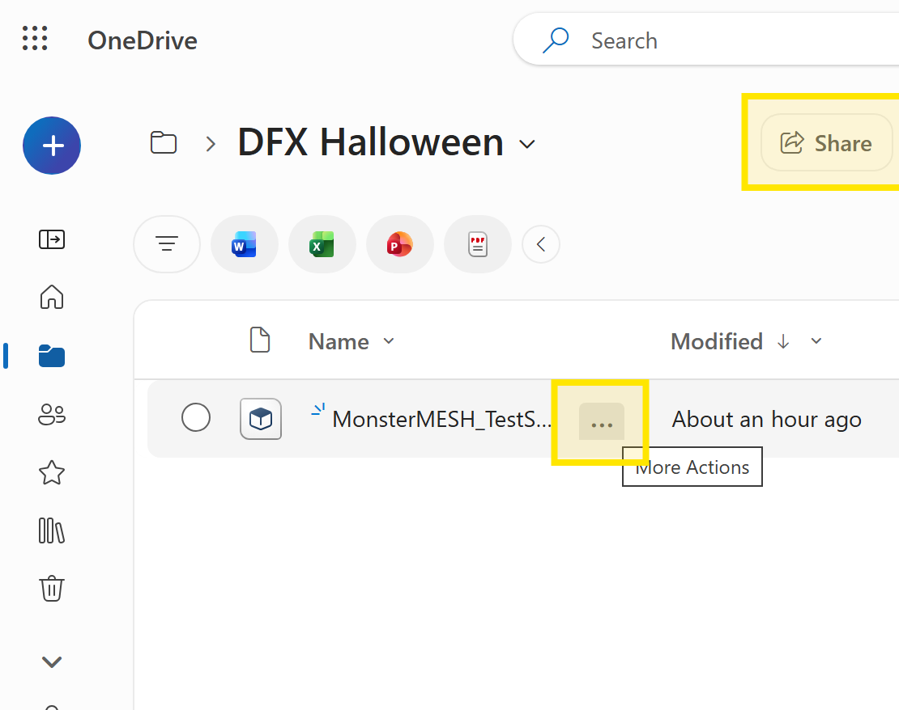
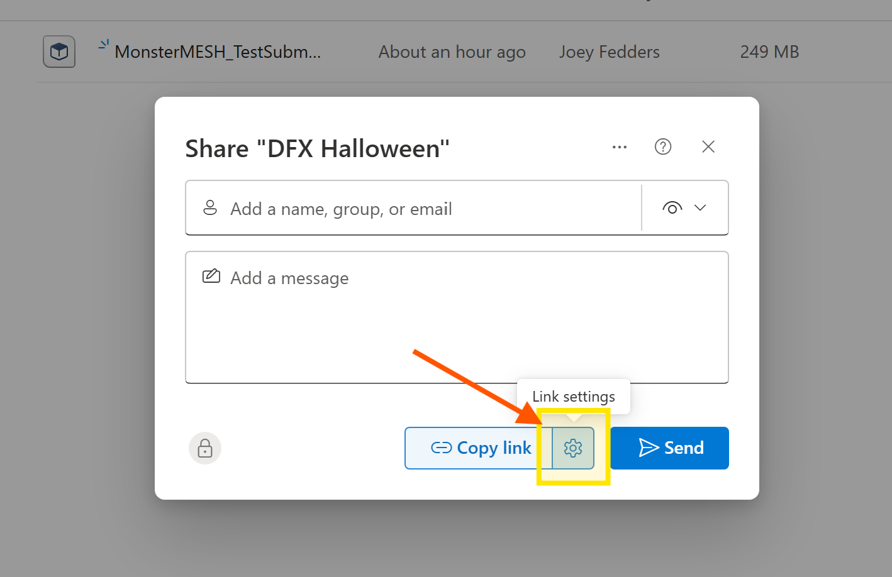
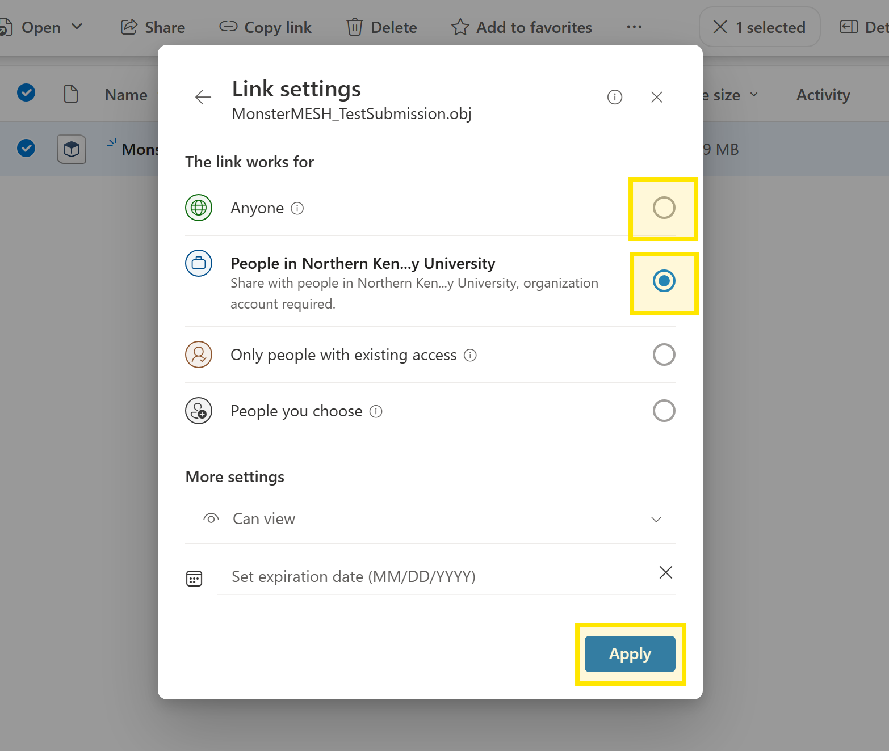

The Griffin Hall Haunting / The Monster Mesh
Share your entry with OneDrive
Monster Mesh submissions are closed. This archived guide explains how entrants shared view-only OneDrive links; it is retained for reference.
-
01
Put your entry in OneDrive
Upload your project file and a preview image or video to your NKU OneDrive. If your entry has several files, place them together in a dedicated folder and share that folder.

Select your file or entry folder, then choose Share. -
02
Open link settings
In the Share dialog, select the gear icon to choose who can open the link and whether they can view or edit the files.

Open Link settings before copying the link. -
03
Choose who can view
Choose People in Northern Kentucky University and leave permission at Can view, then select Apply. This is the recommended option for the contest.
If the judges cannot access an organization link, contact the organizers before changing it to Anyone. Anyone links can be opened by whoever receives them.

Use an NKU-only view link when possible. -
04
Copy and test your link
Copy the link and paste it into the contest form for the matching entry. If you submit two entries, provide a separate link for each one.
Before submitting, test that the link opens for an NKU viewer and does not grant editing access. Don’t share your OneDrive password.